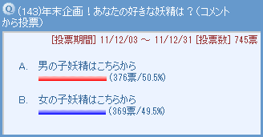

本当に遅くなってしまいごめんなさい。２０１１年の年末に行った妖精人気投票の結果を、皆さんがすっかり忘れた頃に発表いたします。気がつけばこの企画も第４回目。妖精の人気は果たしてどんな風に変化しているのでしょうか？

２０１１年も、トップページの投票より人気投票を実施しました。今回もたくさんの投票をありがとうございます～。［コメント一覧］
ヤシチ＆パピィ＆ムーン (1)
１位はパピィちゃん！ 前回１位をゲットして、見事２連覇を達成です！ この圧倒的な票数を見ると、やっぱりいろんな人から愛されているキャラなんだなぁと思います。うさぎ年が終わっても、２０１２年もムルパピブームは熱く盛り上がりそうです！
２位はムーン。何と何と予想外な展開で驚きました。ムルモ屋本舗の掲示板でもお馴染みの、あの方による強力な票を想像してしまいますが、２０１２年もこの快挙だけにとどまらずにいろんな不思議な現象を起こしてくれそうです。
そして３位はヤシチ！ 少しずつ順位を上げて、ついに表彰台に上りました！ 当初はスケベキャラでしたが、小説板での活躍によりすっかり女性受けする男らしいキャラに成長したヤッくん。この勢いでパピィの位置を狙うのでしょうか？
以下に全順位を紹介します。
残念ながら順位が下がってしまった妖精は、今頃悔しい思いをしながらリベンジに向けて燃えているのでしょうか？ 特にネズミの転落には驚きました。
| 今回 | 票数 | 名前 | 2010年 | 2009年 | 2008年 | |
|---|---|---|---|---|---|---|
| １位 | 184票 | パピィ | １位 | ２位 | ２位 | |
| ２位 | 68票 | ムーン | ▲ | ３２位 | ２４位 | |
| ３位 | 67票 | ヤシチ | ▲ | ５位 | ７位 | ８位 |
| ４位 | 43票 | リルム | ▲ | ２１位 | ３位 | １２位 |
| ５位 | 37票 | ムルモ | ▲ | ７位 | ７位 | ４位 |
| ６位 | 34票 | ワカバ | ▲ | ８位 | ２４位 | ２０位 |
| ７位 | 33票 | ミルモ | ▼ | ４位 | ９位 | ５位 |
| ８位 | 24票 | ネズミ | ▼ | ２位 | １位 | １位 |
| ９位 | 21票 | ハンゾー | ▲ | １２位 | ３位 | ８位 |
| １０位 | 18票 | サスケ | ▼ | ９位 | ９位 | １２位 |
| アンナ | ▲ | １３位 | １２位 | ２０位 | ||
| １２位 | 16票 | ヤマネ | ▼ | ３位 | ５位 | ３位 |
| １３位 | 14票 | イチロー | ▲ | ３２位 | ||
| １４位 | 12票 | ミレン | ▲ | ２４位 | ||
| １５位 | 11票 | ウィン | ▼ | １１位 | ||
| １６位 | 10票 | アクミ | ▲ | １７位 | ５位 | ７位 |
| １７位 | 7票 | フィア | ▲ | ３２位 | ２４位 | |
| アロマ | ▲ | １８位 | １５位 | ６位 | ||
| １９位 | 6票 | カメリ | ▲ | ２４位 | １７位 | |
| ２０位 | 5票 | センリ | ▼ | ６位 | １７位 | １２位 |
| ２１位 | 4票 | ゴロー | ▲ | ２８位 | ||
| アンリ | ▼ | １５位 | １４位 | ８位 | ||
| ２３位 | 3票 | ドンタ | ▲ | ３２位 | ||
| アクア | ▲ | ３０位 | ２４位 | ２０位 | ||
| ピカリ | ▲ | ２８位 | ||||
| ２６位 | 2票 | マンボ | ▼ | ２４位 | １５位 | ２０位 |
| ピクモ | ▲ | ３２位 | ２１位 | ２０位 | ||
| ベルル | ▼ | １０位 | ２４位 | |||
| キャップ | ▼ | １８位 | ||||
| オチョー | ▲ | ２１位 | ２０位 | |||
| クモモ | ▲ | |||||
| ３２位 | 1票 | ユリン | ３２位 | １１位 | ||
| キンタ | ▲ | |||||
| チック | ３２位 | ２０位 | ||||
| ペータ | ３２位 | １２位 | ||||
| ミルモ子 | ▲ | |||||
| ポンタ | ▲ | |||||
| ハーモ | ▼ | ２１位 | ２１位 | |||
| サリア | ３２位 | ２４位 | ２０位 | |||
| ソフト | ３２位 | １７位 | １２位 | |||
| アオイ | ▼ | １３位 | ||||
| トモン | ▼ | ２１位 |
２０１２年の年末にも再び行う予定ですので、その時はまたたくさんの投票をよろしくお願いしますね。
(2012/3/31)